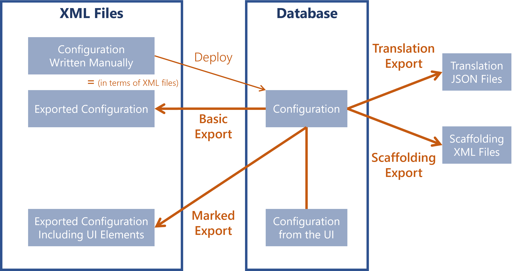

Usercube-Export-Configuration
Generates in a folder the files of the configuration found in the database.
While the deployment process is about taking the configuration elements from the XML files to insert them in the database, the export process is about taking the configuration elements from the database to generate XML files:
-
A basic export will export the XML configuration that was latest deployed to the database, including images like logos and favicons;
-
A marked export will export the whole configuration as XML files, including the configuration elements created via the UI;
As Identity Manager can be configured by writing manually in XML files and/or using the UI, the marked export helps combining both.
Netwrix Identity Manager (formerly Usercube) recommends configuring Identity Manager via the UI as much as possible, and completing the configuration via XML files when needed. -
a basic export will export the translation JSON files;
-
a scaffolding export will export the XML configuration generated by scaffoldings.

For all export types, Netwrix Identity Manager (formerly Usercube) recommends using as output directory a folder other than the one containing the old XML configuration. This way, the exported configuration does not overwrite the old one, and:
- the changes can be clearly viewed in a file comparison tool;
- the interesting changes can be selected individually and inserted in the old configuration, to update the configuration while keeping any manual changes such as comments.
Focus on the marked export
By default, the configuration elements created via the UI are stored in the database just like the rest of the configuration, but they are not included in deployment and export processes.
While UI elements are not marked, they are not included in the XML/database comparison performed during the configuration deployment process. It means that deploying any configuration will not affect UI elements.
On the other hand, once UI elements are marked, they will be included in the XML/database comparison performed during the next configuration deployment process. Then, if these UI elements are not in the deployed XML files, they will be removed from the database.
Be careful about what configuration to deploy and export.
When configuring through both the UI and XML files, make sure to:
- Export all UI modifications before making changes in XML files and deploying the configuration again;
- Deploy all XML modifications before making changes in the UI and exporting the configuration again.
Examples
Locally vs. remotely
The following example exports an on-premise configuration via a direct connection to the database through its connection string:
./Usercube-Export-Configuration.exe -d "C:/Usercube/ExportedConf" --database-connection-string "data source=.;Database=Usercube;Integrated Security=SSPI;Min Pool Size=10;encrypt=false;"
The following example exports a SaaS configuration via an HTTP POST request to the server of the remote configuration:
./Usercube-Export-Configuration.exe -d "C:/Usercube/ExportedConf" --api-url https://my_usercube_instance.com
To be able to export a SaaS configuration, you must first provide your Identity Manager administrator with identity information. See the Export the Configuration topic for additional information.
Basic export for a change of environment
The following example exports all configuration elements of the database as a set of XML files, to the C:/Usercube/ExportedConf folder, for example to move from the pre-production environment to the production environment.
./Usercube-Export-Configuration.exe --database-connection-string "data source=.;Database=Usercube;Integrated Security=SSPI;Min Pool Size=10;encrypt=false;" --configuration-directory "C:/Usercube/ExportedConf"
All XML files from C:/Usercube/ExportedConf are removed and replaced with the new set of XML files, generated based on the configuration elements from the database.
The default behavior of this tool exports all XML files, from the configuration elements stored in the database and the XML/database relationships, as well as logos and favicons. Translations are not exported.
Most modifications made in the UI will be ignored too.
Export UI configuration elements outside the role model
The following example exports all configuration elements as a set of XML files, including the configuration modifications made through the UI, except any elements linked to the role model.
./Usercube-Export-Configuration.exe --database-connection-string "data source=.;Database=Usercube;Integrated Security=SSPI;Min Pool Size=10;encrypt=false;" --configuration-directory "C:/Usercube/ExportedConf" --mark-for-export
All XML files from C:/Usercube/ExportedConf are removed and replaced with the new set of XML files, generated based on the configuration elements from the database, including UI elements (not role-model-related) that are now marked for export.
Export all UI configuration elements
The following example exports all configuration elements as a set of XML files, including all configuration modifications made through the UI, especially role-model-related elements.
./Usercube-Export-Configuration.exe --database-connection-string "data source=.;Database=Usercube;Integrated Security=SSPI;Min Pool Size=10;encrypt=false;" --configuration-directory "C:/Usercube/ExportedConf" --mark-for-export --mark-rolemodel-for-export
All XML files from C:/Usercube/ExportedConf are removed and replaced with the new set of XML files, generated based on the configuration elements from the database, including all UI elements that are now marked for export.
Export translation files
The following example exports to C:/Usercube/ExportedConf the JSON translation files stored in the database, one per language, replacing the ancient versions potentially pre-existing in the output directory.
./Usercube-Export-Configuration.exe --database-connection-string "data source=.;Database=Usercube;Integrated Security=SSPI;Min Pool Size=10;encrypt=false;" --configuration-directory "C:/Usercube/ExportedConf" --export-translation
Export scaffoldings for debug
The following example exports XML files containing the configuration generated by all scaffoldings. It exports one folder per scaffolding type, and in each folder one XML file per scaffolding, containing the configuration generated by the scaffolding.
./Usercube-Export-Configuration.exe --database-connection-string "data source=.;Database=Usercube;Integrated Security=SSPI;Min Pool Size=10;encrypt=false;" --configuration-directory "C:/Usercube/ConfScaffoldings" --export-scaffolding
All XML files from C:/Usercube/ConfScaffoldings are removed and replaced with the new set of XML files, generated based on the scaffoldings from the configuration.
The scaffolding export's output is meant only for viewing in debug situations and must not be inserted in the configuration.
Arguments
|
Argument Name |
Details |
|---|---|
|
--configuration-directory (-d) |
Type
String Description Path of a directory that will receive the exported configuration. |
|
--default-file |
Type
String Description Path of the file where configuration items are stored by default, when they are not related to a predefined storing file. |
|
--export-scaffolding |
Type
No Value Description Exports all scaffoldings and the scaffolded items, i.e. all items generated by scaffoldings. |
|
--export-translation |
Type
No Value Description Exports the JSON files containing all translations, by language. |
|
--format-configuration |
Type
No Value Description Formats the configuration from the folder specified in |
|
--mark-for-export |
Type
No Value Description Exports all configuration elements that were created via the UI, except for those linked to the role model, i.e. the elements exported by the |
|
--mark-rolemodel-for-export |
Type
No Value Description Exports all the configuration elements linked to the role model: |
|
--marked-paths |
Type
String List Description Identifiers of the elements configured through the UI that need to be exported and thus marked for export. |
|
--api-client-id |
Type
String Description Login of the account authorized by Netwrix Identity Manager (formerly Usercube) for configuration export/deployment in a SaaS environment. Note: soon deprecated, rather contact the support team. |
|
--api-secret |
Type
String Description Password of the account authorized by NETWRIX for configuration export/deployment in a SaaS environment. Note: soon deprecated, rather contact the support team. |
|
--api-url |
Type
String Description URL of the server to export/deploy the configuration to, for remote changes. |
|
--database-connection-string |
Type
String Description Connection string of the database. |
|
--product-translation |
Type
No Value Description Path of the JSON file that contains the application's translations. See the Import Product Translations into Identity Manager topic for additional information. |
|
--scope |
Type
String Description Path of a folder or file to export/deploy, instead of exporting/deploying the whole configuration. |
|
--log-level |
Type
LogLevel Description Level of log information among: |